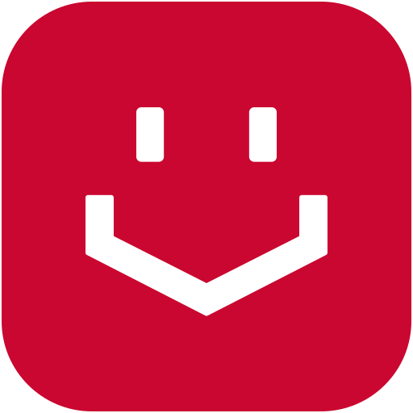
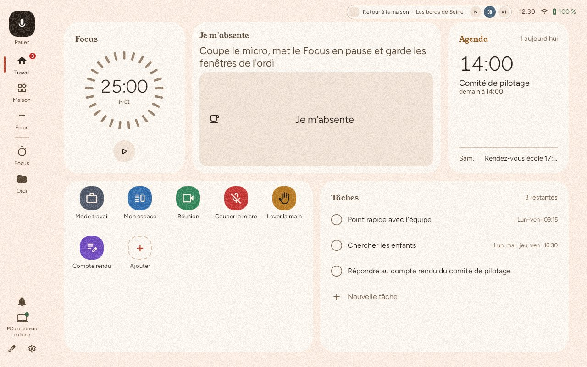
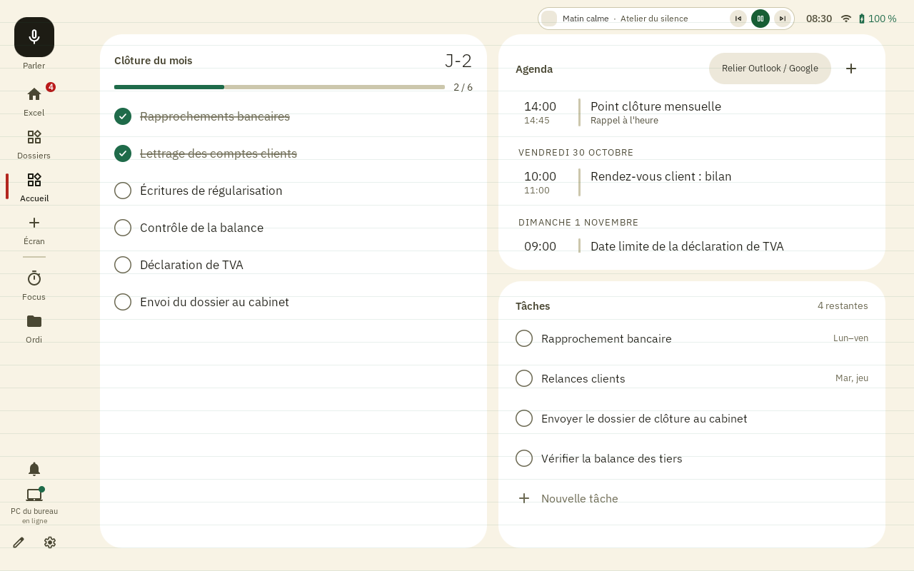
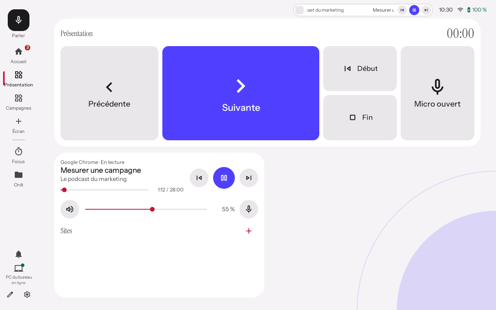
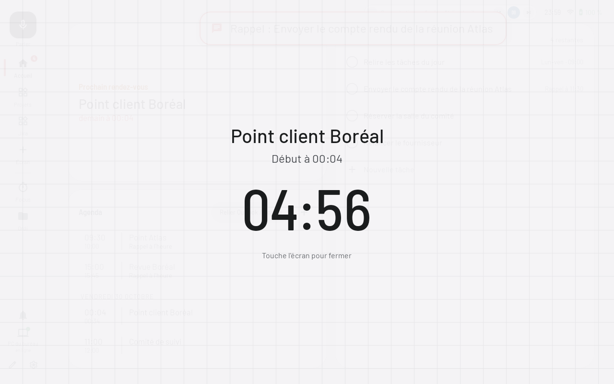
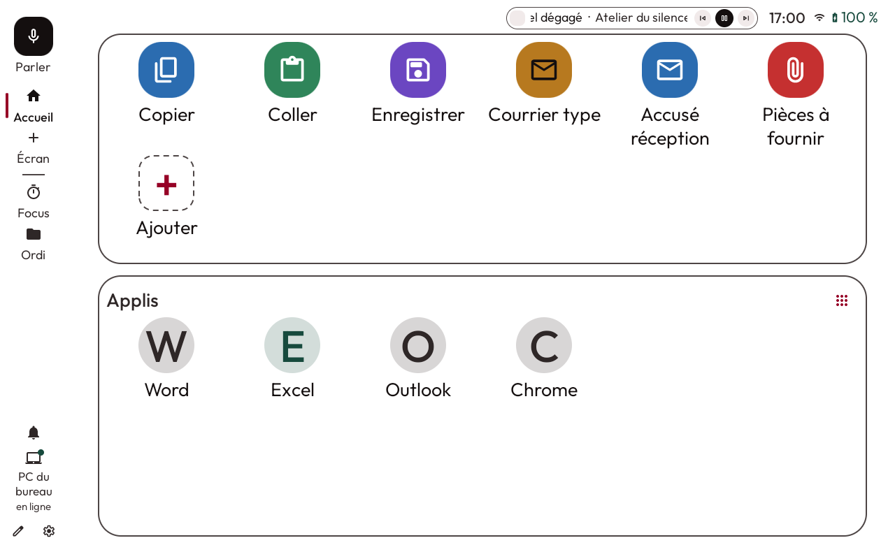
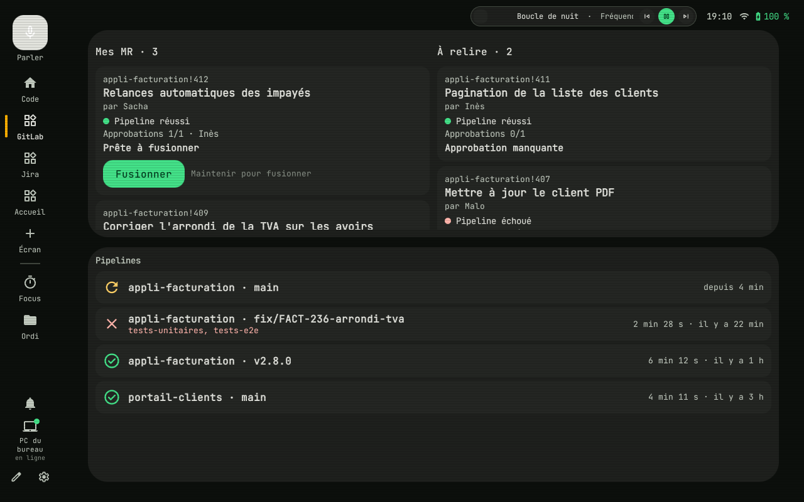

Personnalisation
Des écrans de widgets, des touches et des macros, composés sur l'écran lui-même selon les usages de chacun.

UNOMATEPour les équipes qui travaillent sur ordinateur
UnoMate est un écran de contrôle tactile de 10,1 pouces, relié en WiFi au Mac ou au PC. Chaque collaborateur y range ses outils, ses réunions et ses automatisations, sur des écrans faits pour son métier.
Mac, Apple Silicon et Intel · Windows 10 et 11, 64 bits

Couleurs, typographie, écrans, widgets, touches : chacun compose le sien. Quelques exemples parmi d'autres.





Des écrans de widgets, des touches et des macros, composés sur l'écran lui-même selon les usages de chacun.
Les commandes essentielles au même endroit. Plusieurs actions en un geste, moins de manipulations sur l'ordinateur.
Contraste élevé, texte agrandi, grandes touches, TalkBack et commande vocale, pour les postes aménagés.
Le même écran sert au bureau et à la maison. Il pilote plusieurs ordinateurs et passe seul à celui qui répond.
Un équipement robuste déjà fabriqué, dont le logiciel prolonge la vie au lieu d'en produire un neuf.
Agenda, tâches, touches, applis, fenêtres, Focus, son : chaque écran est une grille de widgets, en plusieurs tailles. Un balayage passe d'un écran à l'autre.
Lance une appli, envoie un raccourci, tape un texte, enchaîne les étapes. Les touches se créent et se modifient depuis l'écran.
Agenda relié à Microsoft, Google ou un lien ICS, un bouton pour rejoindre Teams, Meet, Zoom ou Webex, puis micro, caméra et raccrocher.
Les fenêtres ouvertes de l'ordinateur sont sur un schéma des écrans : un toucher en met une devant, un glissé la change d'écran.
Un chrono de concentration, une ambiance sonore, et Ne pas déranger sur l'ordinateur pendant la séance.
Dis le nom d'une touche ou d'une appli. UnoMate comprend la phrase lui-même, avec son micro intégré, sans IA ni cloud.
UnoMate est proposé par les équipes commerciales d'Unowhy, seul ou en pack avec un PC Unowhy.
À côté des ordinateurs déjà en place, Mac ou Windows, ou livré avec un PC Unowhy.
L'écran et l'ordinateur se parlent en direct sur le WiFi, en HTTPS, après un code d'appairage. Ni compte, ni cloud, ni IA.
L'écran n'ouvre qu'UnoMate. Les mises à jour s'installent seules.
Une réponse à proposer avec le référent handicap : grandes commandes, lecture à voix haute, contraste réglable.
Des modèles d'écrans pour démarrer, Bureau, Deck, Réunion et Veille, posés en un geste puis ajustés par chacun.
Lance le logiciel. Il peut se relancer seul à chaque ouverture de session.
Pose-le sur le bureau, sur le même WiFi que l'ordinateur. Il le trouve tout seul.
L'écran affiche un code à 6 chiffres. Tape-le sur la page qui s'ouvre sur l'ordinateur. C'est appairé.
Le logiciel n'est pas encore signé : le système demande une confirmation la première fois.
Apple Silicon et Intel
Télécharger pour MacWindows 10 et 11, 64 bits
Télécharger pour WindowsNon. L'écran et l'ordinateur se parlent directement sur le WiFi, en HTTPS, après un appairage par code. Il n'y a ni compte ni IA. Seule la météo interroge un service extérieur, MET Norway, sans clé.
Un Mac ou un PC Windows 10 ou 11, sur le même WiFi que l'écran. Il est pensé pour rester branché sur le bureau.
Oui. Chaque ordinateur s'appaire une fois, le bureau le jour et la maison le soir. UnoMate passe seul à celui qui répond. Chaque ordinateur garde son agenda, ses tâches et ses touches.
Non. Les modèles Bureau, Deck, Réunion et Veille se posent en un geste. Un appui long sur un écran passe ensuite en mode Modifier.